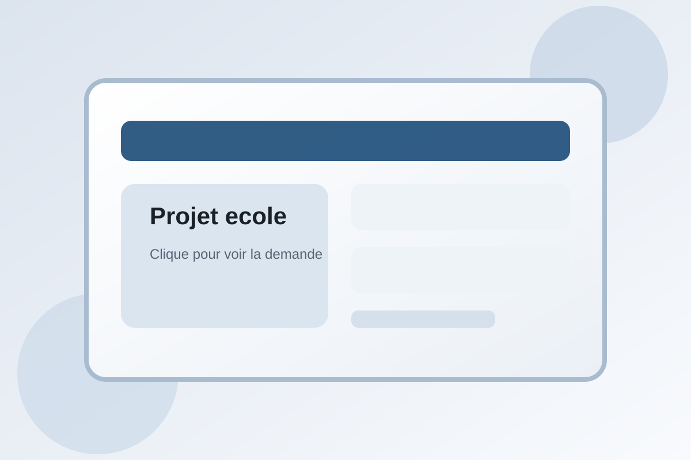

Prise en compte de charte de nommage pour les fichiers et les dossiers
Verification des regles de nommage utilisees par un utilisateur.
Cliquer sur l'image pour voir la demande et la realisation.Travaux réalisés en cours

Verification des regles de nommage utilisees par un utilisateur.
Cliquer sur l'image pour voir la demande et la realisation.Verification des regles de la charte informatique utilisees par des employes.
Cliquer sur l'image pour voir la demande et la realisation.Realisation et evolution d'un programme C# pour la gestion de reservation d'une salle.
Cliquer sur l'image pour voir la demande et la realisation.Creation d'un site nomme bobocal avec WordPress.
Cliquer sur l'image pour voir la demande et la realisation.Correction des erreurs presentes sur le site Linkretz.
Cliquer sur l'image pour voir la demande et la realisation.Installation et configuration d'Ubuntu avec un TP sur les commandes Linux.
Cliquer sur l'image pour voir la demande et la realisation.Mise en place d'une installation complete autour de GLPI.
Cliquer sur l'image pour voir la demande et la realisation.Installation et configuration d'un serveur Windows.
Cliquer sur l'image pour voir la demande et la realisation.Recherche complete sur les differents types de sauvegarde.
Cliquer sur l'image pour voir la demande et la realisation.Suivi de l'actualite technologique et synthese des evolutions importantes.
Cliquer sur l'image pour voir la demande et la realisation.